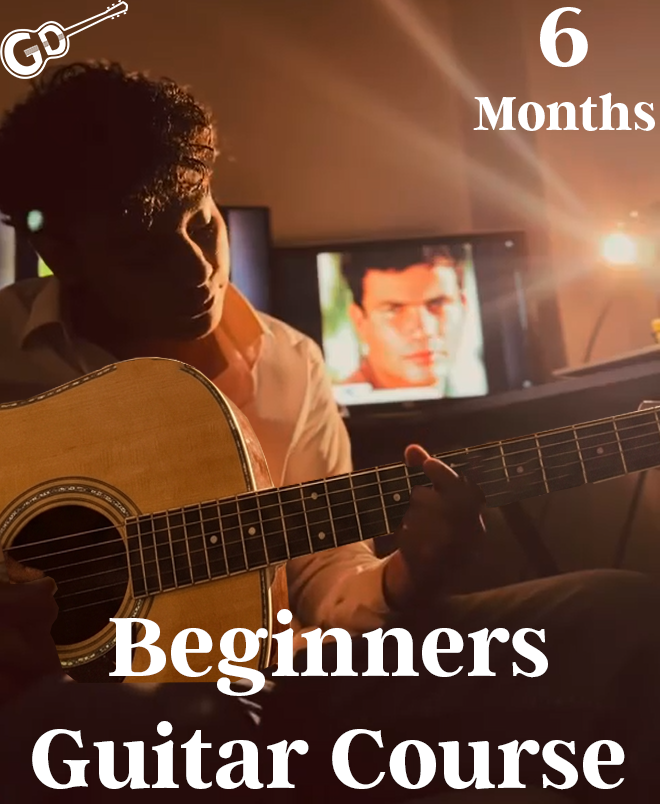
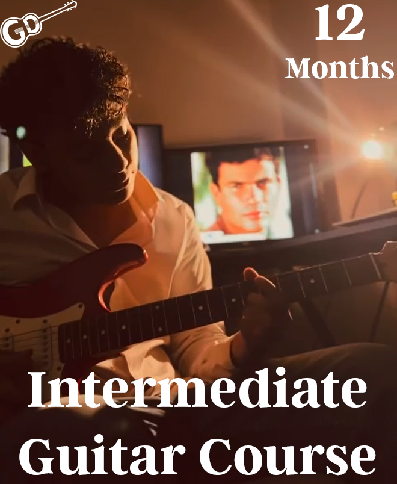
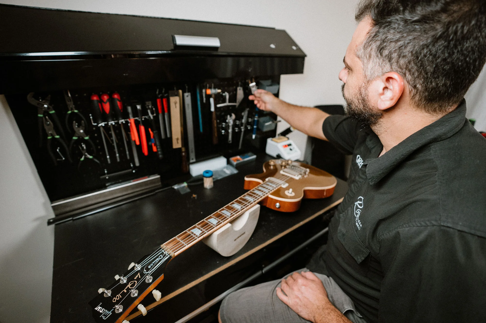

$399


$649
$999

We don't just sell guitars; we make sure they play perfectly for a lifetime. Our guitars are digitally tested to match profession standards harmonics. Since its components expand and contract, feel free to bring it over to our experts who will transform it to a new condition.

Our team of luthiers have over 20 years of experience. Services include all guitar needs from fret leveling, electronics repair, bridge adjustments, parts replacement, & more.

Struggling with your chords? We teach everything from scales to complex music theory.
Pro tip most beginners start by mastering the Gmaj and Cmaj chords to play their favorite songs quickly!

$399

$649
$999
Dokan Guitar is the perfect place for me, whatever I'm looking for they have it
- John Smith
I took the beginner course recently it was hard at first but then it became easier
- Jane Doe
All my band members chose this place I'm glad they recommended it, the best
- Suhail Alattar
See our students practicing